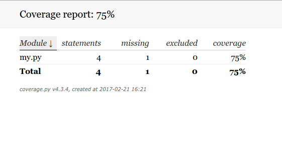
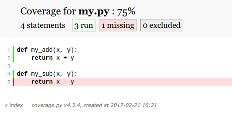

Testing#
Computational Python
layout: false
Why testing?#
Make sure the code is correct.
Testing is a design tool
Testing is a documentation tool
It makes for a better design
Code will never be written that is difficult to test
Code tends get better structure
It’s what professionals do
Because it saves time and money
What is TDD in practice?#
To add new functionality, e.g. a function
Make up in your mind what the function should do
What input
What output
Do not code the function –
Initialize#
First Write a test that
Calls the function
Compares the actual output to the desired output
Report if they differ
The work cycle#
Run the test
Did it fail?
The first time it fails because the function does not exist
Add code to the function with the purpose of passing the test and nothing more
Start over
Did it pass?
Stop
Do not write more code. You are done.
Tools#
Tools for testing python code#
doctest: a simple way of including tests in a doc-string of a function
unittest: a module of the standard python library to provide advanced testing
pytest: a commonly used third-party tool for running tests
Doctest#
Simple test cases can be provided as part of the documentation string
Cut and paste an interactive session known to give true result
The doctest module executes the example from the interactive session as a test case
Test on string output and not values - small changes in formatting will case tests to fail
Example#
#calculate.py
def add(a, b):
"""Return sum of two arguments
>>> add(1, 1) #doctest: +SKIP
2
>>>
"""
return a + b
def sub(a, b):
"""Return difference of two arguments
>>> sub(1, 1) #doctest: +SKIP
0
"""
return a + b
can you see the bug?
Running doctest#
At the end of the file
if __name__ == "__main__":
import doctest
doctest.testmod()
On the command line
$ python calculate.py
All code in the file is executed
Functions are defined
__name__ == "__main__"evaluates toTrueTest are run
The output#
$ python calculate.py
**********************************************************************
File "calculate.py", line 14, in __main__.sub
Failed example:
sub(1, 1)
Expected:
0
Got:
2
**********************************************************************
1 items had failures:
1 of 1 in __main__.sub
***Test Failed*** 1 failures.
Correct the bug
return a + b -> return a - b
Rerun
$ python calculate.py
$
silent - all ok
Conclusion - doctests#
Very easy to include testning into your code
The test serves as documentation as well
Typically tests only one aspect of the function
But could clutter your code and may not be the best for extensive testing
Extensive testing is best separated from production code
More information on http://docs.python.org/library/doctest
The unittest module#
Unit testing#
Unit testing in program development refers to testing the behaviour of smallest possible units of code in a program with a well defined task
A unit test module exist for this purpose:
unittestThe tests can be written in a separate file
One defines a class which is a subclass of
unittest.TestCaseThe unittest framework executes and checks everything that begins with test
Part of the standard library and provides very portable testing
Howto#
Define a class with a name beginning with
Testas a subclass ofunittest.TestCaseDefine class methods that begin with
testusing the test functions of theunittestmoduleOptionally one may define a
setUpand atearDownmethod which are run before and after every test.In the main section run
unittest.main()
class TestSomething(unittest.TestCase):
...
def test_this(self):
...
def test_that(self):
...
if __name__ == "__main__":
unittest.main()
Example#
#test_calculate.py
import unittest
import calculate
class TestCalculate(unittest.TestCase):
def testadd(self):
res = calculate.add(1, 1)
self.assertEqual(res, 2)
def testsub(self):
res = calculate.sub(1, 1)
self.assertEqual(res, 0)
if __name__ == "__main__":
unittest.main()
Run test#
$ python test_calculate.py
.F
======================================================================
FAIL: testsub (__main__.TestCalculate)
----------------------------------------------------------------------
Traceback (most recent call last):
File "test_calculate.py", line 18, in testsub
self.assertEqual(res, 0)
AssertionError: 2 != 0
----------------------------------------------------------------------
Ran 2 tests in 0.001s
FAILED (failures=1)
Run verbose test#
$ python test_calculate.py -v
testadd (__main__.TestCalculate) ... ok
testsub (__main__.TestCalculate) ... FAIL
======================================================================
FAIL: testsub (__main__.TestCalculate)
----------------------------------------------------------------------
Traceback (most recent call last):
File "test_calculate.py", line 18, in testsub
self.assertEqual(res, 0)
AssertionError: 2 != 0
----------------------------------------------------------------------
Ran 2 tests in 0.001s
FAILED (failures=1)
Fix the bug#
return a + b -> return a - b
–
Rerun test#
$ python test_calculate.py -v
testadd (__main__.TestCalculate) ... ok
testsub (__main__.TestCalculate) ... ok
----------------------------------------------------------------------
Ran 2 tests in 0.000s
OK
Other helper functions tests#
assertNotEqualassertTrueassertFalseassertAlmostEqualMost numerical testing is within a threshold, e.g.
def testdiv(self):
res = calculate.div(1., 3)
self.assertAlmostEqual(res, 0.333333, 6)
pytest#
Another testing framework#
Pytest is a third-party unit-testing tool for python
It looks for all tests in the current directory (and subdirectories and executes functions containing test)
It is compatible with the
unittestframework so it executes those tests as wellNot as strict about setting up tests (as class members)
pytest understands unittest style tests and executes them as well.
Without arguments all test are carried out which it can find
It couples to the python debugger
It supports coverage - shows which lines of codes were not executed during the tests
Example#
#testdiv_alt.py
from calculate import div
def test_div3():
"""Test integer division"""
res = div(1, 3)
assert res == 0
def test_div4():
"""Test floating point division"""
res = div(1., 3)
assert abs(res - 0.333333) < 1e-6
Running pytest#
$ pytest testdiv_alt.py
..
----------------------------------------------------------------------
Ran 2 tests in 0.000s
OK
Each dot represents a passed test, an F is a failed test
or verbose
$ pytest -v testdiv_alt.py
============================= test session starts ==============================
platform linux -- Python 3.12.0, pytest-8.3.3, pluggy-1.5.0 -- /home/olav/.pyenv/versions/slides/bin/python3
cachedir: .pytest_cache
rootdir: /home/olav/Courses/comppy/slides/testing
plugins: cov-6.0.0, anyio-4.3.0
collecting ... collected 2 items
test_div.py::test_div3 PASSED [ 50%]
test_div.py::test_div4 PASSED [100%]
============================== 2 passed in 0.02s ===============================
Note: docstring is used in the error report
Pytest and the debugger#
By running pytest with a debug option, it runs all tests.
When a test fails the program stops and launches the debugger where the error condition was detected
$ pytest test_calculate.py --pdb
.> /usr/lib/python2.7/unittest/case.py(508)_baseAssertEqual()
-> raise self.failureException(msg)
(Pdb)
Once in the debugger it is possible to examine variables, execute functions
(Pdb) print res
2
(Pdb) print calculate.sub(2, 1)
3
Pytest and coverage#
coverage is a relative measure of how many of your lines of codes have been executed during the tests
$ pytest test_calculate.py --cov calculate
We get a list over all modules that have been executed and, how many lines, and which lines that we missed
note: In this case there was a function not tested.
Pytest#
Understands many styles of tests
The most modern testing framework
Easy to get started
Advanced features
It supports test coverage
It couples to the python debugger
Example#
Define the test
>>> def test_my_add():
... assert my_add(1, 1) == 2
Run the test
>>> test_my_add()
Putting this code in a file
my.py
def test_my_add():
assert my_add(1, 1) == 2
execute with py.test
C:\...> py.test my.py
Collects everything that looks like a test
Executes them one by one
Separate test code and production code
test_my.py
import my
def test_my_add():
assert my.add(1, 1) == 2
my.py
def add(x, y):
return x +y
Run the test
C:\Users\...> py.test test_my.py
Example#
>>> def test_leap_year():
... assert is_leap_year(2000) == True
... assert is_leap_year(1999) == False
... assert is_leap_year(1998) == False
... assert is_leap_year(1996) == True
... assert is_leap_year(1900) == False
... assert is_leap_year(1800) == False
... assert is_leap_year(1600) == True
>>> test_leap_year()
Test coverage#
Coverage is a measure how much of your code is executed by tests
During a test run a coverage library keeps track of executed lines
Guides developer where bugs may hide
How it works (pytest)
Summary
C:\Users\...> py.test test_my.py --cov my
Line info
C:\Users\...> py.test test_my.py --cov my --cov-report=term-missing
HTML report
C:\Users\...> py.test test_my.py --cov my --cov-report=html
Open in browser
 Recommendation#
Use
doctestfor small illustrations, if anyUse
pytestto execute your tests, optionally with debugging and coverage
Final tip#
Embrace the TDD philosphy, write test before code.
Document code and modules - be kind to your future self.
For good programming style, consider PEP 8, http://www.python.org/dev/peps/pep-0008/
Be obsessive about testing
If your test code is larger that your production code, you are on the right track
This takes initially a little more time but the rewards in the long run are huge